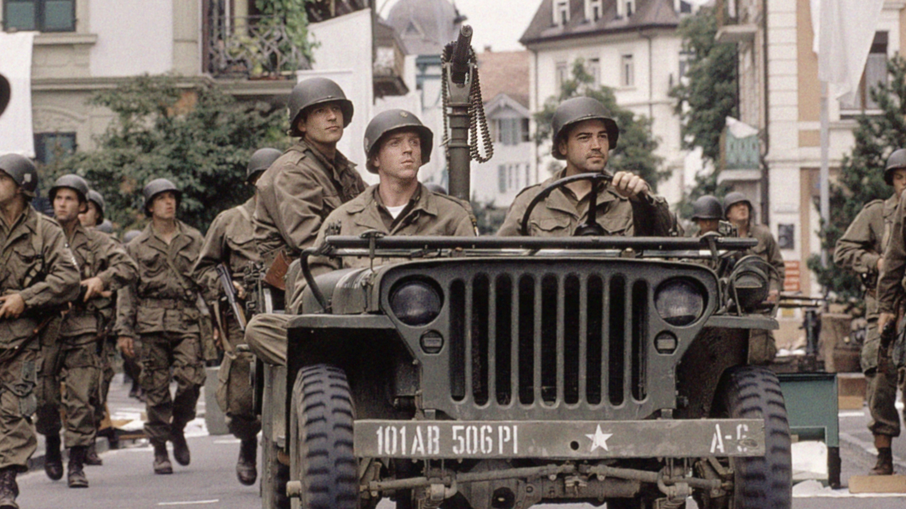
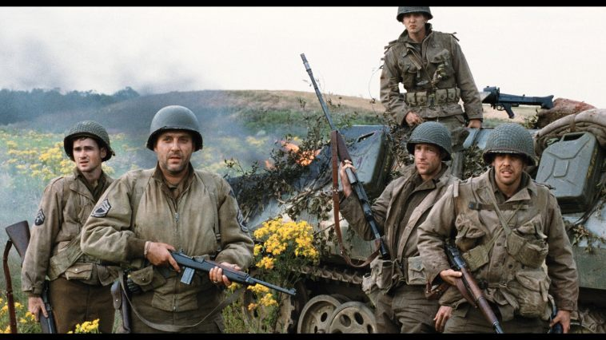
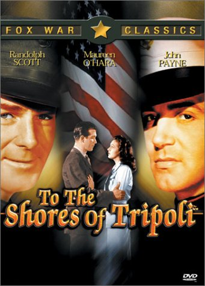

Historical Accuracy
Here you will find a list of the movies depicted on this website and the trends of the importance of historical accuracy in World War II films.
The most accurate movies were produced during the early to mid Cold War era(with exception to Band of Brothers)where as the least accurate movies have been more recent movies.
-
Very Accurate
-

Accurate
Modest Accuracy
Pure Fiction
The Movies
The Classics
Conclusion
World War based movies have become more intense, more graphic, and more local over the past century. They have also become smaller mainly because older movies, such as The Longest Day and the original The Battalion, used veterans from the wars on their respective casts and crew. Saving Private Ryan, The Lost Battalion, and Windtalkers take place in Europe during World War II, Europe during World War I, and the Pacific war respectively. However, each movie has a common theme in that one strong main character leads his soldiers through what would seem to be an impossible task. The main goal in Saving Private Ryan is to find a lost soldier somewhere in Europe after the Normandy invasion had just started and bring him back. The opposite takes place in Windtalkers where one strong, war hardened sergeant must protect “The Code”, even if that means killing his code-talker to prevent him from capture. The Lost Battalion shows an exceptional leader in that of Major Charles Whittlesey. Whittlesey as well as all his men had no military experience before the war broke out but they managed to “hold the line” against waves of German attacks with barely any ammunition, men, food, or hope.
All these movies follow a small “Band of Brothers” and audiences are amazed by their bravery. Because of these small representations in modern films many tend to forget there were one billion deaths during the years of World War II, and hundreds of millions serving in active duty all around the world. Anyone without much background on the history of the wars may easily get the impression after watching The Lost Battalion that because the battalion held their ground against all odds, the war was won. This is far from the case as the war was nearly over to begin with. One may get the impression after following Easy Company in Band of Brothers that Easy’s participation in the war, won the war. We see Easy train in America, para-drop into France the night before D-Day, fight through the Battle of the Bulge to Belgium, and all the way to and through Germany. To top it off, Easy Company captures Hitler’s Nest high up in the mountains at the end of the series.
Lawrence H. Suid , however, believes that American’s who leave theatres today believe these movies to be fake and they know they “are seeing actors who go up at the end of the filming, took off their costumes, and went back to their hotel rooms. Viewers consciously or unconsciously recognize that [producers] are manipulating their emotions.”(Source 1) Most modern films advertise something along the lines that “it is based on a true story” and because of this, audiences leave believing that what they saw was what the war was actually like. When people produce images with their imagination about what the Normandy Beach was like on June 6, 1944 they use what they saw in these films as reference.